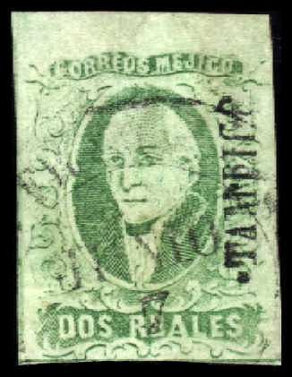
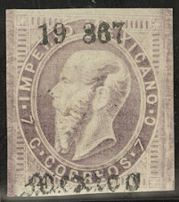
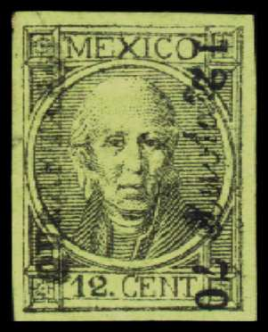
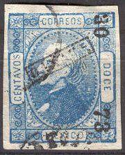
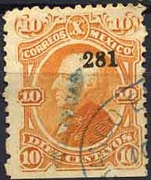
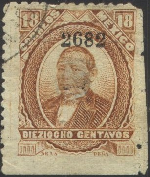
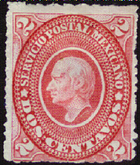
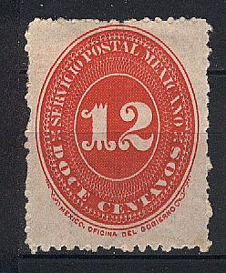

Mexique - Mexiko
Return To Catalogue - 1856-1863 issues - Cancels on the first issue - 1864-1865 issues - 1866-1879 issues - 1866-1871 issues - 1872-1879 issues - 1880-1998 issues - 1899-1909 issues - 1910-1914 issues - 1915-1920 issues - Miscellaneous - Local issues - Fiscal stamps - Civil war issues - Raoul de Thuin
Note: on my website many of the
pictures can not be seen! They are of course present in the
catalogue;
contact me if you want to purchase it.
1856-1863 issues (also re-issued 1867), example:

Miguel Hidalgo y Costilla initiated the struggle for independence, it is his portrait that appears on the first stamps of Mexico.
Mexico cancels on the first issue
1864-1865 issues, examples:
When Juarez became president, he decided to cancel the debts his predecessors had made. This provoked a war with France, who finally put Maximilian on the throne as an emperor in 1864. During this time the two above stamps were issued.
1866-1871 issues, examples
 
(Maximilian and Hidalgo)
Emperor Maximilan was condemned to deadth in 1867.
1872-1879 issues, examples:




1880-1998 issues, examples:



1899-1909 issues, example:
1910-1914 issues, example:
Civil war issues (1913-1914), examples:
During the civil war in Mexico, several local stamps were issued.
1915-1920 issues, example:
A great number of forgeries can be found for almost every issue of Mexico. The forgeries of whole stamps can mostly easily be recognized. More difficult to detect are forged security overprints on genuine stamps or even 'enhanced' letters with added rare cancels, bisected stamps etc. For example the forger Raoul de Thuin has forged many items of Mexico (especially rare cancels). In the book "The Yucatan Affair: The Work Of Raoul Ch. de Thuin, Philatelic Counterfeiter", more than half of the contents are dedicated to forgeries of Mexico.
He is known to have produced letters with forged bisects addressed to Ignacio Hernandez, Founeria de los Parados.
* 'A Catalogue of the Stamps of Mexico 1856-1900'
by N. Follansbee 1998.
* 'The Yucatan Affair: The Work Of Raoul Ch. de Thuin, Philatelic
Counterfeiter', compiled by a specialist editorial staff, an
American Philatelic Society handbook. issued in 1974, information
on the forgeries made by Raoul de Thuin; approximately half of
this book is dedicated to his forged cancels of Mexico.
* 'The revenue stamps of Mexico' by Richard B. Stevens; 352 pages
* 'Catalogo Especializado de los Sellos Postales de Mexico' by
Eduardo Aguirre 1937 (8th edition), 1957
* 'Mexico los Timbres Provisorios de Campeche' by Eduardo Aguirre
1914, 35 pages (in Spanish)
* 'Mexico les Timbres Provisoires de Campeche' by Eduardo Aguirre
1914, 35 pages (in French)
* 'Stanley Gibbons limited Priced Catalogue of the 1856 to 1872
issues of Mexico with a list of district names and numbers
together with a description of the reprints and forgeries and
notes on the plates colours, retouches etc.' by Charles J.
Phillips, 1917
Stamps - Timbres-Poste - Estampillas - Sellos Postales

{kind=link}
{kind=link}
{kind=link}
{kind=link}
{kind=link}
{kind=link}
{kind=link}